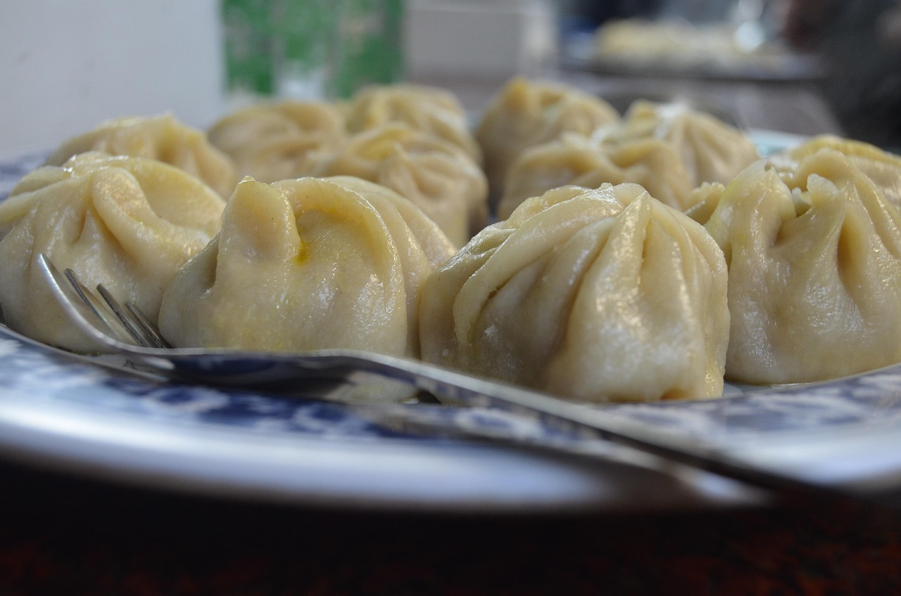

Xiao Long Bao Dim Sum

A beloved dim sum classic, Xiao Long Bao, is know for its delicate wrappers and flavorful
soup-filled center. These steamed dumplings are often filled with seasoned pork and
rich broth that melts the soup, providing a burst of flavor with every bite.
Xiao Long Bao has becom a fan favorite at many dim sum restuarants. Typically, they are
steamed in bamboo baskets and served hot with black vinegar and fresh ginger. Enjoy
these carefully. One small bite can release the delicious, aromatic soup inside.
Ingredients
- 3 punds chicken backs or wings
- 1/2 Chinese ham or slab bacon
- 6 scallions,whites separated and greens chopped
- 1 knob fresh ginger
- 1 tablespoon white peppercorns
- 10 cups water
- Kosher Salt
For the Filling:
- 1/3 ground pork
- 1/4 pound raw shrimp, peeled
- 2 teaspoons soy sauce
- 1 tablespoon Shaoxing wine
- 2 teaspoons sugar
- 1/4 teaspoon Diamond Crystal kosher salt
For the Dough
- 2 cups all-purpose flour
- 1 cup boiling water
For the Cooking
Instructions
- Combine chicken bones, ham, scallion whites, half of scallion greens,
ginger, and white peppercorns in a stockpot and cover with cold water.
Bring to a boil over high heat, reduce to a simmer, and simmer, uncovered,
for 2 1/2 hours. Line a fine-mesh strainer with cheesecloth, and set over a
large heatproof bowl. Carefully pour bone broth through strainer into bowl
until the liquid has been strained. Discard solids in strainer.
Season to taste with salt, cover, and refrigerate until set into a semi-firm
jelly, at least 8 hours. Scrape off the fat that sets on top of the chilled
bone broth and discard.
- Meanwhile, combine pork, shrimp, soy sauce, wine, sugar, 1 teaspoon salt,
and remaining scallion greens in a food processor. Process until a fine
paste is formed, about 12 to 15 one-second pulses.
Refrigerate until ready to use.
- Meanwhile, place flour in the bowl of a food processor. With machine running,
slowly drizzle in water until a cohesive dough is formed
(you probably won't need all the water). Allow dough to ride around
processor for 30 seconds. Form into a ball using floured hands and transfer
to a bowl. Cover with a damp towel and let rest for at least 30 minutes.
- When broth is gelled, transfer filling mixture to a bowl along with 1 1/2 cups
of jellied broth (save the rest for another use). Beat or whisk it in until
homogenous. Season with salt. Keep filling well chilled.
- Divide dough into 4 sections. Roll each section into a 6-inch long log.
Cut each section into 10 equal pieces and roll each into a 10 gram ball,
making 40 balls total. On a well-floured work surface, roll each ball into a
round, flat wrapper, 3 1/2- to 4-inches in diameter. Using a roller, gradually
roll the edges of the wrapper towards the center to create thinner edges and a
thicker center. Stack wrappers and keep under plastic until all of them are
rolled out.
- To form dumplings, place 1 tablespoon of filling in the center of a wrapper.
Moisten the edges of the wrapper with a wet fingertip or a pastry brush. Pleat
edges of the wrapper repeatedly, pinching the edge closed after each pleat
until the entire dumpling is sealed in a cinched purse shape. Pinch and twist
top to seal. Transfer sealed dumplings to a lightly floured wooden or
parchment-lined board.
- Place a bamboo steamer over a wok with 2 inches of water. Place over
medium-high heat until simmering. Line steamer with napa cabbage leaves and
place dumplings directly on leaves. Steam until cooked through, 10 to 12
minutes. Serve immediately, being careful not to break them.
Home